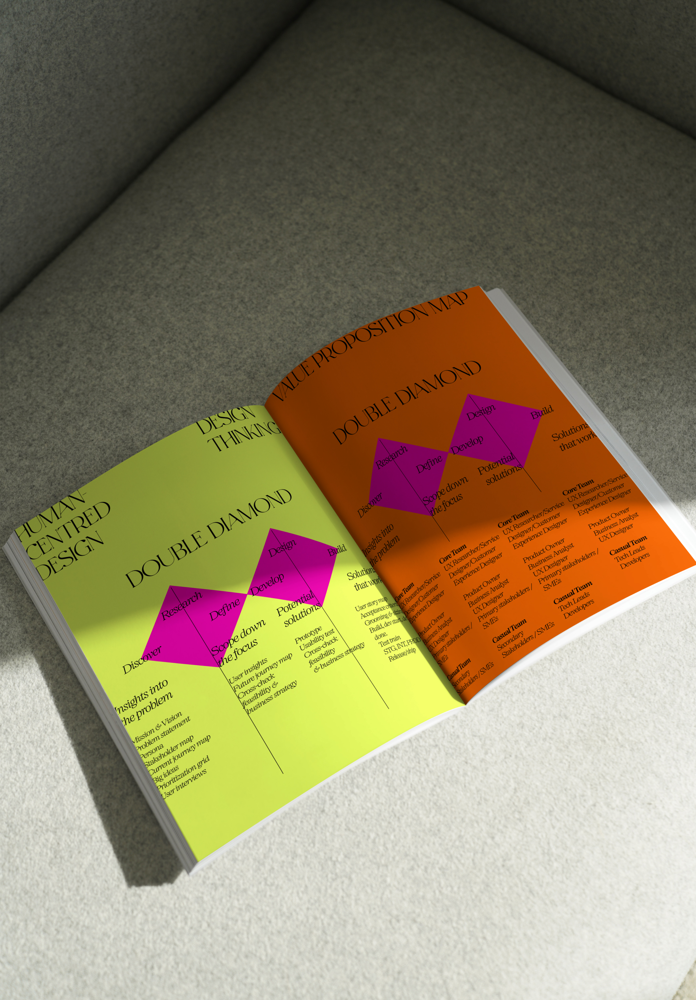

In 2023, there were X,XXX incidents related to audio-visual issues at AUT, averaging XX per week, and XX per day across three campuses. These requests, handled by the ICT Service Desk, Cyclone/Field Services and the audio-visual team, ranged in priority from P1 to P5, based on the 40 weeks of the university calendar year.
Historical data from the ServiceNow revealed that in 2020, there were XX incidents related specifically to the Learning and Teaching/LT team and XXX incidents related to Field Services/FS, with an overall total of XXX incidents.
The trend showed a gradual increase in incidents over the subsequent years, with XXX incidents in 2021, XX LT-related and XXX Field Services-related, and XXX incidents in 2022, XX LT-related and XXX Field Services-related.
However, 2023 saw a dramatic rise to X,XXX incidents, with XXX related to LT and X,XXX to Field Services. This sharp increase suggests a significant surge in demand for support, potentially driven by an expansion in Field Services and responsibilities, which now includes broader support for both audio-visual and software usability issues.
The rise in incidents highlights an increased complexity in support needs, particularly as software and audio-visual usability issues became more prominent.
The reports data from the 2020- 2023 combined various problems, such as equipment faults, rebooting issues, and general end-user issues.
Due to intellectual property restrictions, the UX Lead/Specialist is unable to disclose the report figures for this project.
The UX Lead/Specialist (Zara Epifantseva) conducted, facilitated, led, mentored, and coached the audio-visual team to investigate the challenges that academic lecturers encounter when using audio-visual equipment during teaching and learning in the classroom at AUT.
Human-centered Design methodology, Design Thinking Methods, and the Double Diamond framework were implemented throughout the design process.
This project aims to enhance the user experience for academic lecturers using audio-visual equipment during classroom teaching and learning sessions.
The goal of the audio-visual team is to enable lecturers to become self-sufficient with the equipment within 3 to 6 months after the new solution is implemented.
This is additional information about the new section. It gives insights into its purpose and details.